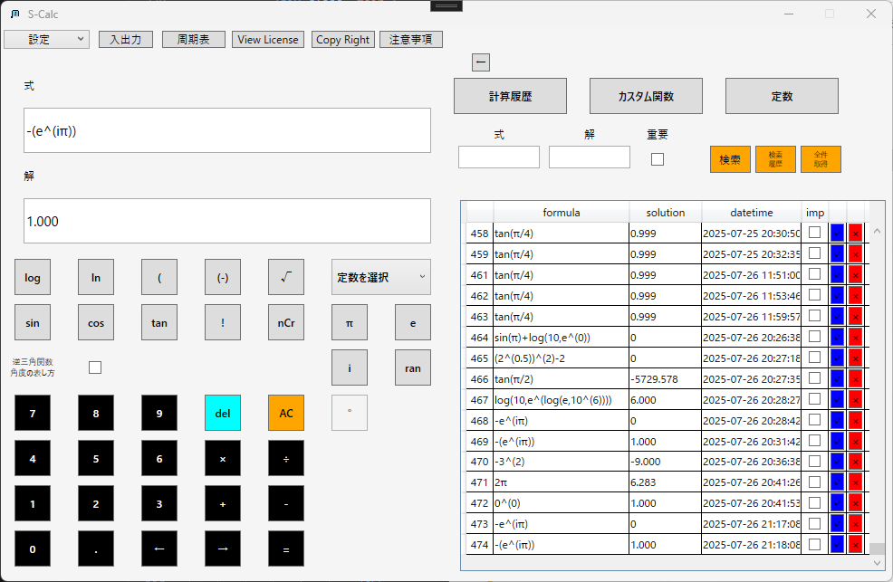

Windows 関数電卓 S-Calc｜計算履歴・カスタム関数搭載｜科学研究・エンジニアリング対応
Windows Scientific Calculator S-Calc | Calculation History & Custom Functions for Science & Engineering
S-Calcは計算履歴保存、定数登録、カスタム関数に対応したWindows対応の高機能関数電卓です。科学計算や工学計算、物理・化学の学習・研究を効率化します。
※日本語のページです。ブラウザの翻訳機能で英語に翻訳してご覧ください。
(*This page is in Japanese. Please use your browser's translation feature to view in English.)
S-Calcは、計算履歴保存・定数登録・カスタム関数に対応した
Windows向けの高機能関数電卓ソフトです。
学習や業務、研究の繰り返し計算を、もっと快適に。
ライセンスプラン
| 機能 | ライト版（3,300円） | フル版（5,500円） |
|---|---|---|
| 基本計算機能 | ✅ | ✅ |
| 定数機能 | ✅ | ✅ |
| カスタム関数 | ✅ | ✅ |
| 計算履歴機能 | ✅ | ✅ |
| 周期表機能 | ❌ | ✅ |
S-Calcの活用シーン


科学研究でのS-Calc活用
科学研究において、計算の精度と効率は研究成果を大きく左右します。
S-Calcは、化学・物理・生物学などの研究者にとって、より正確で高速な計算を支援する高機能関数電卓です。
実験データの解析や公式計算をスムーズに行い、計算ミスを削減し、作業時間を短縮できます。
| 研究分野 | 使用用途 |
|---|---|
| 化学研究 | 濃度計算、反応速度解析、pH計算 |
| 物理研究 | 力学計算、電磁気学の数値計算、流体力学シミュレーション |
| 生物統計 | 統計解析、標本サイズ計算、生存分析 |
S-Calcを活用した具体的な計算例を、こちらのページで紹介しています。
また、以下のURLからnoteに掲載しているマガジンを開くことが出来ます。
こちらのマガジンでは「S-Calc」を使うことで出来る計算を紹介しています。
https://note.com/itechem/m/mb6388a5a4f39
エンジニアリング分野での利用
エンジニアが日常的に扱う計算は、複雑で時間がかかるものが多くあります
S-Calcは、エンジニアリング向けのカスタム関数機能や計算履歴機能を活用し、機械設計・電子回路設計・建築構造計算などの作業を効率化します。
| エンジニアリング分野 | 計算用途 |
|---|---|
| 機械設計 | 材料応力、モーメント計算、回転体の慣性計算 |
| 電子回路設計 | 抵抗値・コンデンサ容量計算、電流・電圧の解析 |
| 建築・土木 | 耐震計算、梁の応力計算、配筋計算 |
教育用途（学生・教師向け）
数学・物理・化学を学ぶ学生にとって、関数電卓は欠かせません。S-Calcは、高度な関数計算を可能にするWindows向けの電卓ソフトです。
教師が授業で活用する際にも、履歴機能を使って計算過程を確認できるため、教育支援ツールとしても最適です。
| 学科 | 活用例 |
|---|---|
| 数学 | 方程式の解法、関数グラフの解析 |
| 物理 | 運動方程式、電磁波計算 |
| 化学 | 分子量計算、酸塩基平衡 |
S-Calcの主な特徴
計算履歴の保存機能
S-Calcでは、過去の計算履歴を保存し、後で簡単に参照・再利用することが可能です。
この機能により、「以前の計算をやり直したい」「間違いがないか確認したい」といった場面で役立ちます。
カスタム関数の登録と活用
エンジニアや研究者が扱う複雑な数式を、カスタム関数として登録できます。
一度登録すれば、繰り返し利用でき、計算ミスのリスクを減らし、作業効率を向上させます。
物理定数・数学定数の管理
S-Calcでは、物理学・数学でよく使う定数を登録することができます。
例えば、光速・プランク定数・重力加速度など、頻繁に利用する定数を即座に呼び出せます。
他の関数電卓ソフトとの比較
Windows標準電卓との違い
| 機能 | S-Calc | Windows電卓 |
|---|---|---|
| 計算履歴 | ✅ 保存可能 | ❌ 履歴なし |
| カスタム関数 | ✅ 関数登録・再利用OK | ❌ 関数のカスタマイズ不可 |
| 定数管理 | ✅ 登録・共有可能 | ❌ 定数の保存なし |
【注意】マイナス記号と累乗の解釈について
計算式'-3^2'は、数学的には'-(3^2)'と解釈されるため、結果は'-9'になります。同様に'-e^(iπ)'は'-(e^(iπ))となり、正しくは'1'となるはずですが、S-Calcでは「-eを複素数として処理」してしまう場合があります。 数式を明確に伝えるために、特に「マイナス記号＋累乗」の場合は括弧を明示するようにしてください。 ※S-Calcではe^(iπ)を計算する際、eを複素数の底とみなして処理します。

価格・購入方法
S-Calcの価格とライセンス形態
S-Calcは5,500円（税込）で提供しております。
S-Calc FullがMicrosoft Storeで公開されました。